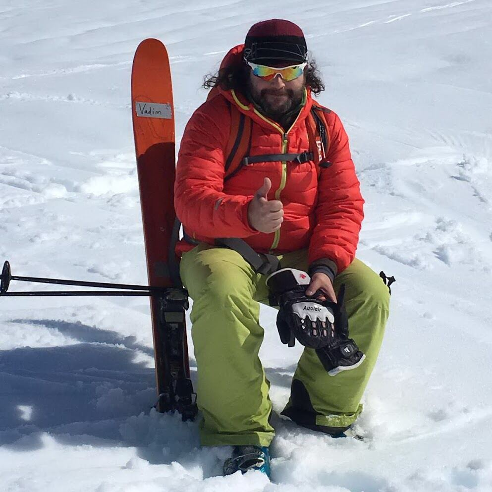
Всё по-настоящему
Мы проводим лишь небольшое количество экспедиций в год, а значит, можем проработать каждую деталь до мелочей, сотрудничая только с партнёрами, которых знаем много лет.
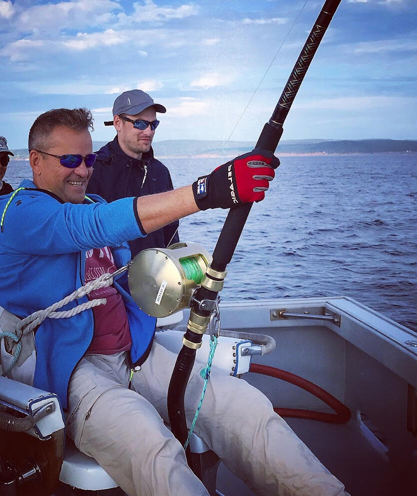
Трофейная рыбалка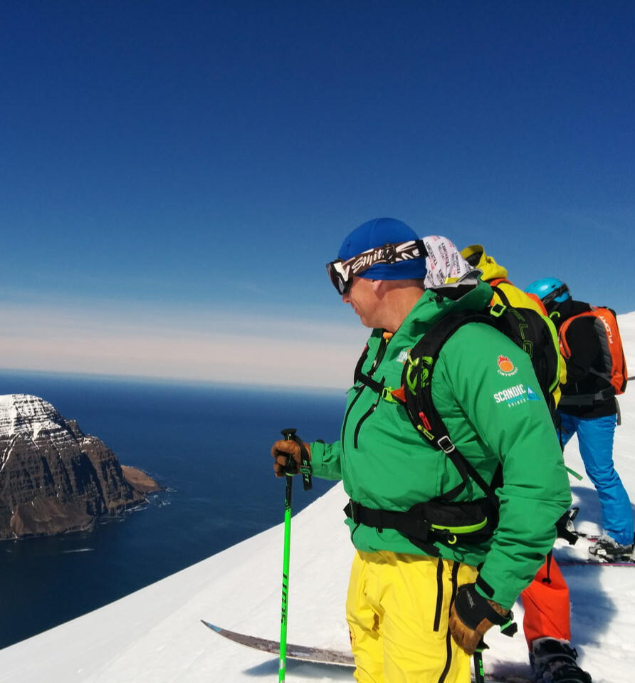
Хелиски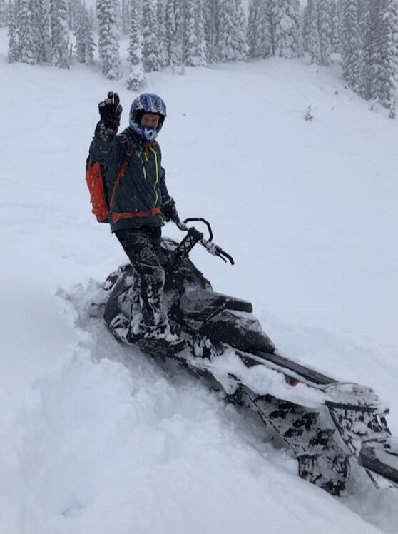
Экспедиции под ключ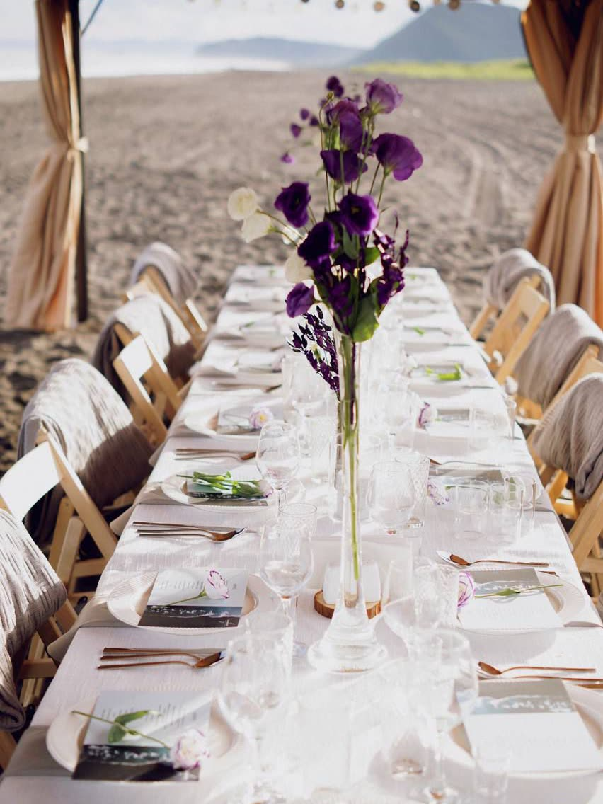
СобытияЭто не просто поездка — это приключение, которое останется с вами. Вертолёт улетает — и вокруг только горы, снег и тишина. Борьба с мощной рыбой на леске. Чистый воздух, треск костра, ощущение полной свободы — моменты, которые вы будете вспоминать годами
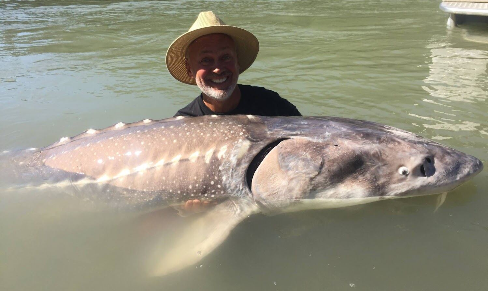
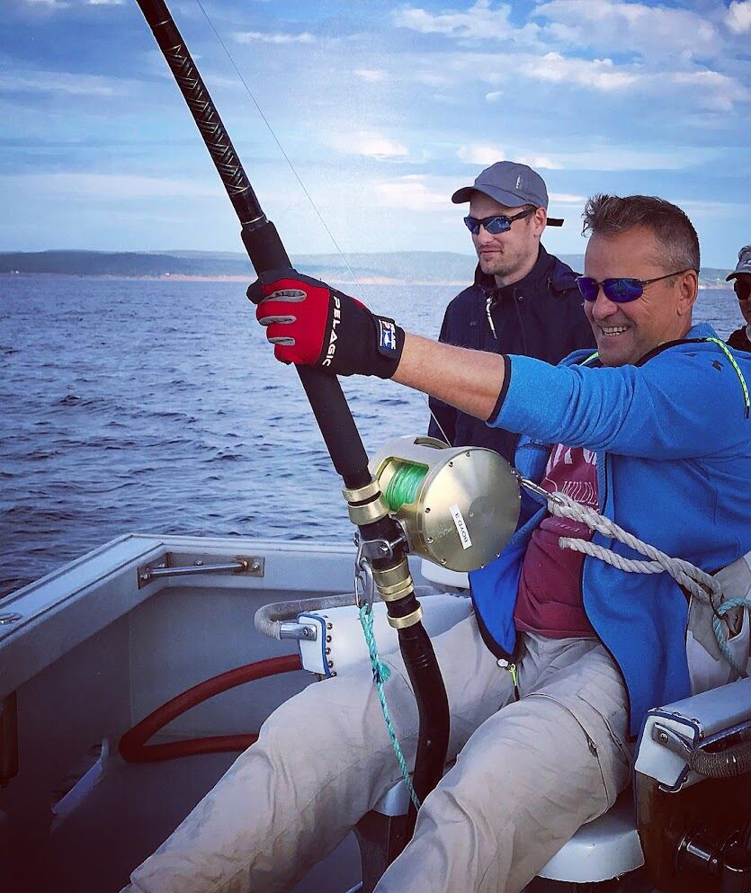

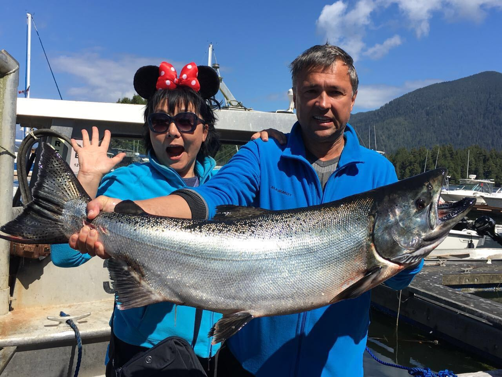
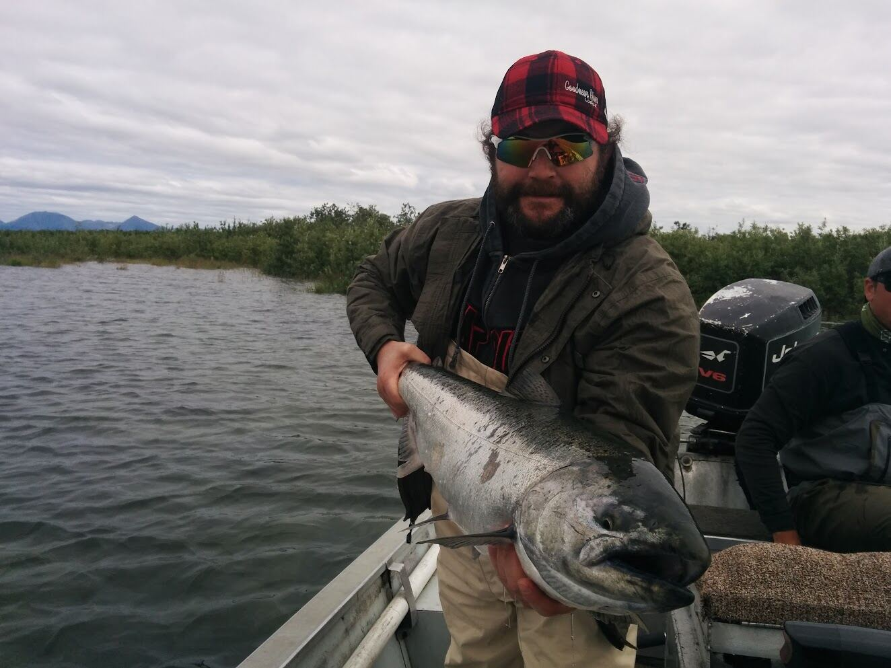
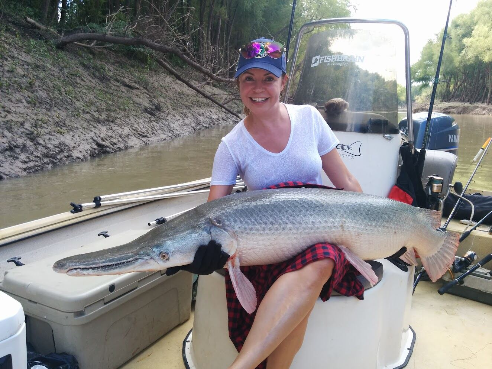
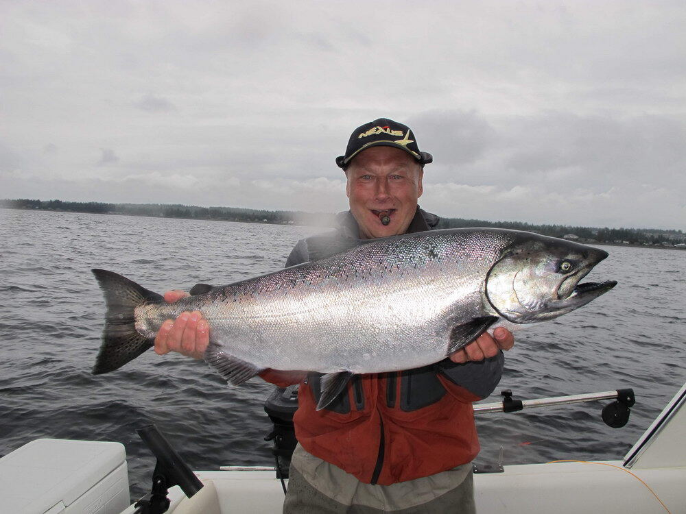